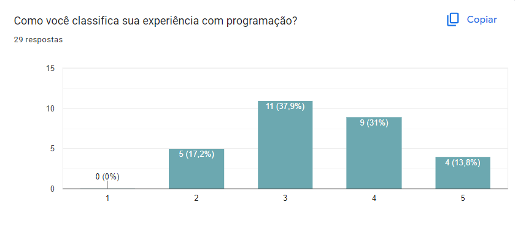
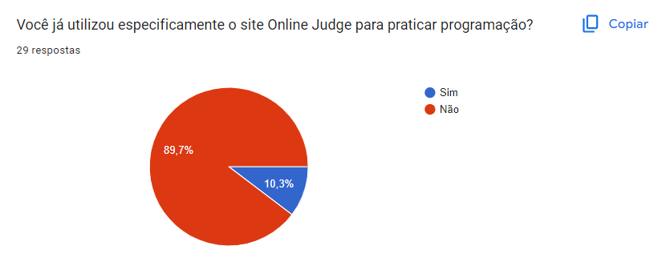
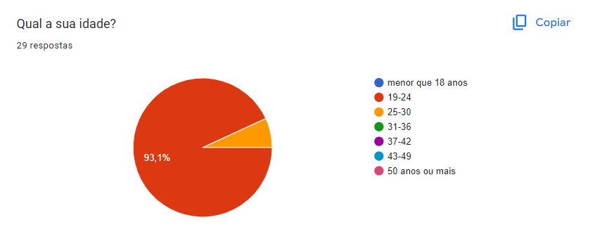
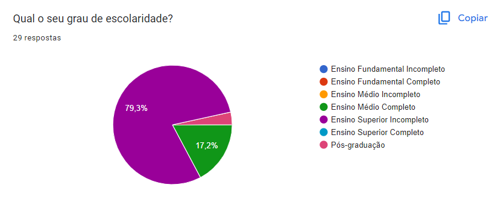
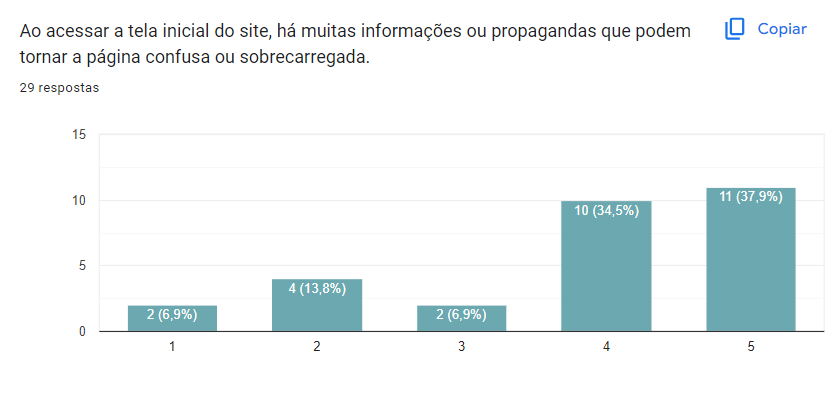
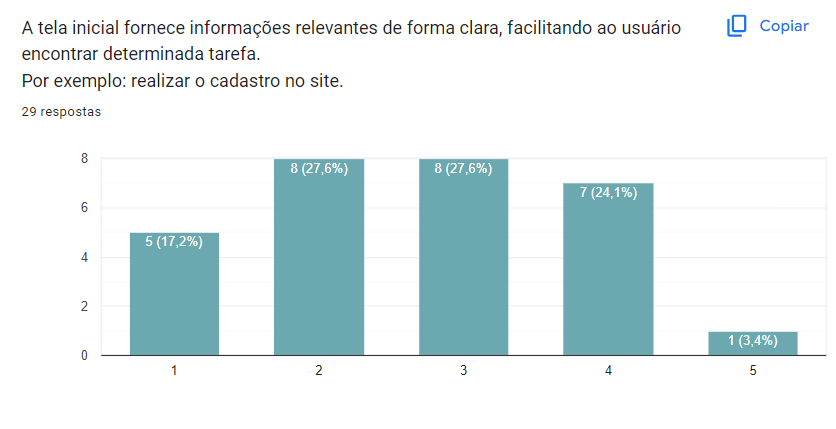
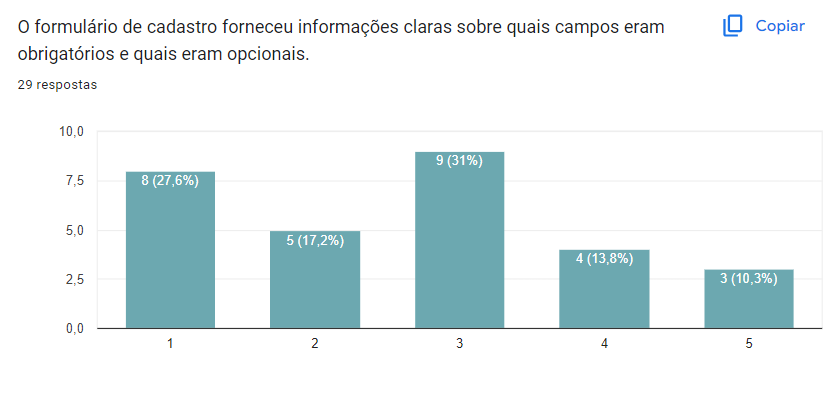
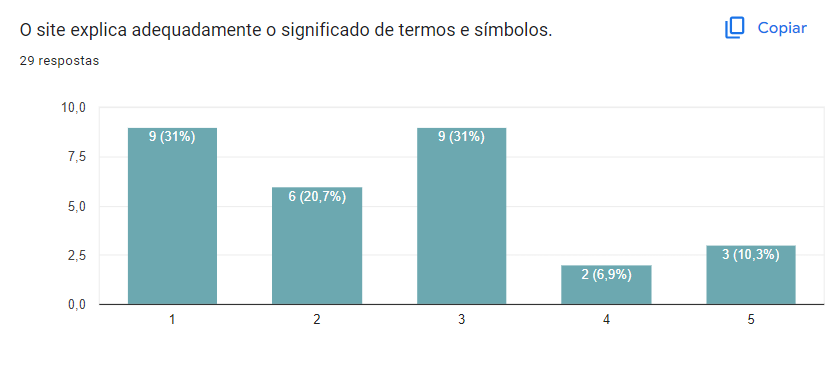
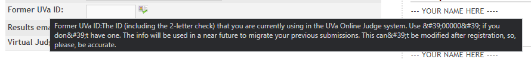

Perfil de Usuário
Introdução
Definir o perfil de usuário é uma etapa essencial no desenvolvimento do projeto, visto que possibilita compreender quem são os indivíduos que utilizam o sistema. Segundo Barbosa e Silva, esse perfil descreve as características dos usuários, possibilitando entender quais são os objetivos que o sistema deve atender ao ser projetado. Essa abordagem auxilia no entendimento das necessidades, preferências e requisitos dos usuários, contribuindo para o desenvolvimento de um sistema mais eficaz e voltado para atender às suas demandas. 1.
Metodologia
Para a elaboração do perfil de usuário foram utilizadas duas técnicas: questionário e entrevista. O questionário foi elaborado no Google Forms e possuía 15 questões que incluiam dados demográficos e informações sobre a experiência do usuário ao utilizar o site. O formulário coletou respostas durante os dias 13/10/2023 e 15/10/2023. No artefato de Aspectos Éticos é apresentado o Termo de Consentimento. A entrevista, conduzida pela integrante Kallyne Macedo, foi realizada, em momentos distintos através da ferramenta de vídeo-chamada da plataforma WhatsApp, com três estudantes universitários de Engenharia de Software na Universidade de Brasília (UnB), do sexo masculino, identificados como E1, E2 e E3 (Entrevistado 1, 2 e 3) e contava com 6 perguntas sobre a experiência com sites de juiz online e com o Online Judge.
Dados coletados pelo questionário
Pergunta 1: Como você classifica sua experiência com programação?
Ao analisar a Figura 1 é possível concluir que 44,6% possuem certa experiência na área de programação.

Pergunta 2: Você já utilizou algum site de juíz online para praticar programação?
A Figura 2 mostra que 69% dos participantes do questionário já utilizaram sites de juiz online para treinar programação.

Pergunta 3: Você já utilizou especificamente o site Online Judge para praticar programação?
De acordo com a Figura 3, cerca de 89,7% dos participnates nunca usaram o Online Judge.

Pergunta 4: Qual a sua idade?
93,1% dos participantes estão entre a faixa etária de 19-24 anos de idade.

Pergunta 5: Sexo
A quantidade de participantes do sexo feminino foi de 48,3% e do sexo masculino 51,7% (Figura 5).

Pergunta 6: Qual o seu grau de escolaridade?
Cerca de 79,3% dos participantes possuem Ensino Superior Incompleto (Figura 6).

As perguntas 7, 8 e 9 se basearam na Figura 7, a qual mostra a tela inicial do site Online Judge.

Pergunta 7: Ao acessar a tela inicial do site, há muitas informações ou propagandas que podem tornar a página confusa ou sobrecarregada.
37,9% dos participantes concordaram totalmente com essa afirmação, de acordo com a Figura 8.

Pergunta 8: A estrutura visual do site, como a disposição de elementos, cores e fontes, segue as tendências atuais de design.
10 dos 29 participantes do questionário, discordaram totalmente dessa afirmação (Figura 9).

Pergunta 9: A tela inicial fornece informações relevantes de forma clara, facilitando ao usuário encontrar determinada tarefa.
Por exemplo: realizar o cadastro no site.
Cerca de 27,6% dos participantes tiveram uma opinião neutra sobre essa afirmação (Figura 10).

A pergunta 10 se baseia na Figura 11, que mostra o menu de ações do site Online Judge.

Pergunta 10: O menu de ações possui uma linguagem clara para todo tipo de usuário, independente se é da área de computação ou não.
27,6% discordaram totalmente dessa afirmação (Figura 12).

As perguntas 11, 12 e 13 se baseiam na Figura 13, que mostra a tela de registro do site Online Judge.

Pergunta 11: O formulário de cadastro possui símbolos ou ícones de difícil compreensão.
31% dos participantes concordaram com a afirmação da pergunta 11 (Figura 14).

Pergunta 12: O formulário de cadastro forneceu informações claras sobre quais campos eram obrigatórios e quais eram opcionais.
31% dos participantes tiveram uma opnião neutra sobre a afirmação da pergunta 12 (Figura 15).

Pergunta 13: O site explica adequadamente o significado de termos e símbolos.
31% dos participantes discordaram totalmente da afirmação da pergunta 13 (Figura 16).

A pergunta 14 se baseia na Figura 17, que o campo Former UVa ID presente na tela de cadastro do site Online Judge.

Pergunta 14: Para você a explicação fornecida pelo site é de fácil compreensão?
Tradução do texto presente na Figura 17: Antigo UVa ID: O ID (incluindo o check de 2 letras) que você está usando atualmente no sistema UVa Online Judge. Usar '00000' se você não tiver um. As informações serão usadas em um futuro próximo para migrar suas submissões. Isso não pode ser modificado após o registro, então, por favor, seja preciso.
72,4% afirmaram que a explicação do site para o campo Former UVa Id não é de fácil compreensão.

Pergunta 15: Você tem algum comentário sobre sua experiência com o site Online Judge ou alguma sugestão de melhoria?
Essa pergunta era opcional e tivemos duas respostas: "Não" e "Eu não usei, mas as imagens mostram algo ruim" (Figura 19).
Dados coletados pela entrevista
Pergunta 1: Como você classifica sua experiência com programação? E computação?
E1: Experiente.
E2: Dentro do escopo da faculdade eu considero média/alta, pois já fiz grande parte das matérias de programação que a universidade oferece e me inseri em diversas iniciativas. E média/alta para computação também pelos mesmos motivos.
E3: Experiência média com programação, não programando com muita frequência. Com computação, baixa.
Pergunta 2: Que afinidade você tem com sites de júri online?
E1: Já utilizei bastante na faculdade, mas não utilizo para estudo próprio.
E2: Alta, eu utilizei ele em praticamente todas as matérias de programação até o presente momento.
E3: Utilizei poucas vezes para atividades da faculdade.
Pergunta 3: Qual sua primeira impressão do site OnlineJudge? Como ele se compara com outros sites de júri online que você conhece?
E1: Minha primeira impressão é que ele é bem velho e não tem uma interface intuitiva. Comparado a outros sites de juri online, o OnlineJudge fica atrás em quesitos de UI/UX.
E2: Ele é bem criterioso e muitas vezes leva em consideração alguns fatores que nem sempre são levados por outros juízes convencionais como o do URI on-line judge.
E3: Não gostei da interface. É estranho a notícia dos livros na página inicial. Os outros sites que conheço são mais modernos.
Pergunta 4: Notou algum erro ou ponto de destaque no site?
E1: O Site não tem um cabeçalho.
E2: O design dele é bem defasado e poderia ter algumas funcionalidades extras para orientar os alunos sobre o erro obtido.
E3: Login meio escondido, do lado esquerdo; Coluna de 'sponsors' sem preencher (--your name here--); Ter anúncios na página inicial, invés de uma introdução, é confuso para o usuário.
Pergunta 5: Que tarefas você realiza na página inicial do site?
E1: Login, cadastro, recuperar senha, acesso a livros, doar para os mantenedores do site.
E2: Login, acesso de lista, verificação de prazos das listas.
E3: Login, pesquisar no google.
Pergunta 6: O que você mudaria no site?
E1: Majoritariamente eu mudaria a interface. Ela está muito ultrapassada e não atende a muitos padrões de qualidade.
E2: O design pensando na usabilidade e também a questão de não conseguirmos verificar os erros obtidos e ficarmos dependentes de um bot de uma plataforma externa
E3: Deixaria mais claro o intuito do site para ficar mais fácil o primeiro acesso e a curva de aprendizagem.
Conclusão
Após a coleta e os estudos dos dados obtidos com o questionário e as entrevistas, é possível traçar um perfil objetivo para o usuário do site Online Judge. Dessa forma, observamos que o perfil majoritário de uso é de público misto (48% feminino e 52% masculino), entre 19 a 24 anos de idade, com escolaridade de Ensino Superior Incompleto, o que indica perfil universitário. A entrevista, conduzida com três alunos encaixados no perfil traçado para o público-alvo, possibilitou a visualização de diferentes pontos de atenção levantados acerca do site e identificou o usuário como apto e adaptado com o uso de tecnologia computacional. Assim, podemos definir os atributos do usuário:
• 1 - Idade: Jovem
• 2 - Experiência: Intermediário à Especialista
• 3 - Atitudes: Tecnófilos
• 4 - Tarefas Primárias: Atividade acadêmica sem fins lucrativos.
Referências Bibliográficas
1. BARBOSA, S. D. J.; SILVA, B. S. Interação Humano-Computador. Rio de Janeiro: Elsevier, 2011.
Histórico de versão
| Versão | Data | Descrição | Responsáveis | Revisor |
|---|---|---|---|---|
| 1.0 | 15/10/2023 | Inicialização da página de perfil de usuário | Ester Lino | Luana Torres |
| 1.1 | 16/10/2023 | Entrevistas e conclusão | Kallyne Macedo | Ester Lino |